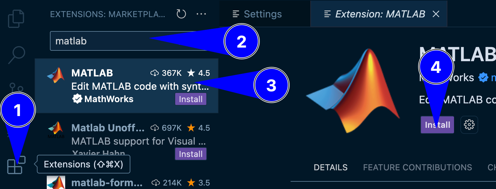
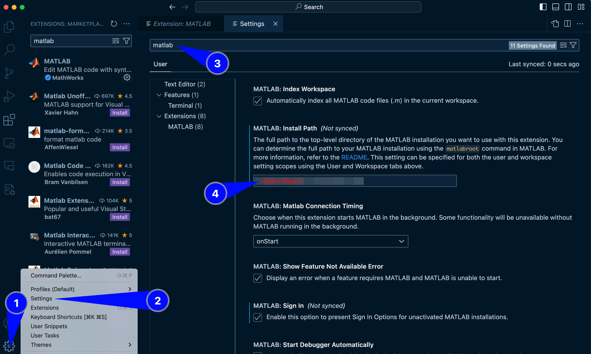
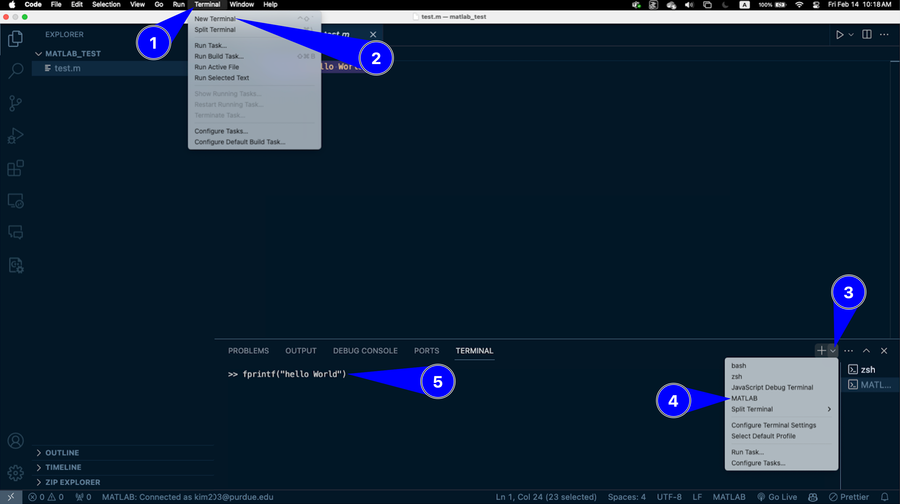
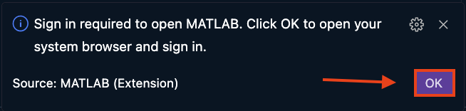
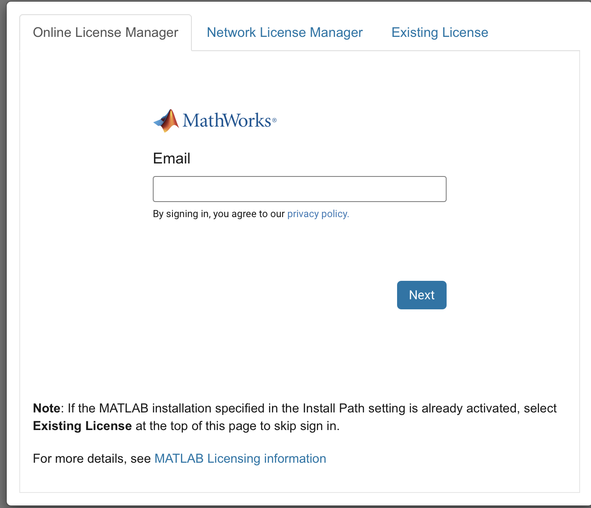
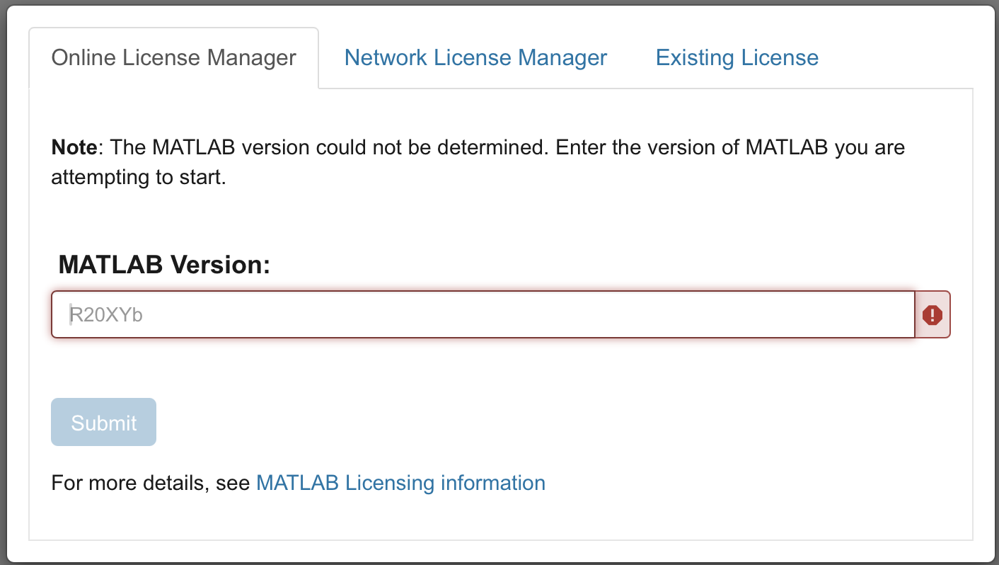

A character array is a sequence of characters using single quotes '...'
A string array is a container for pieces of text using double quotes "..."
In Python, strings are immutable sequences of characters using either single or double quotes ('...' or "..."). There is no separate type for character arrays.
📌 A key difference between the two languages:
MATLAB indexing starts at 1
Python indexing starts at 0
This off-by-one difference can lead to subtle bugs when translating logic between the two environments.
x=convertCharsToStrings(y);% Convert char array to string
MATLAB Indexing:
A=[10,20,30,40,50];first_element=A(1);% Accesses the first element (10)third_element=A(3);% Accesses the third element (30)last_element=A(end);% Accesses the last element (50)
Python Indexing:
A=[10,20,30,40,50]first_element=A[0]# Accesses the first element (10)third_element=A[2]# Accesses the third element (30)last_element=A[-1]# Accesses the last element (50)
Both MATLAB and Python offer robust control flow mechanisms, including for and while loops, which are essential for repetitive tasks. While their functionalities are similar, their syntax and typical use cases differ.
For loops are used for iterating over a sequence or a range of numbers.
MATLAB for loop syntax:
MATLAB’s for loop typically iterates over a numerical range or the columns of an array.
% Iterate over a numerical rangefori=1:5disp(i);% Displays 1, 2, 3, 4, 5end% Iterate over elements of an array (less common directly than Python)myArray=[10,20,30];forval=myArraydisp(val);% Displays 10, 20, 30 (iterates column-wise)end
Python for loop syntax:
Python’s for loop iterates over any iterable object (lists, strings, tuples, etc.).
# Iterate over a numerical range using range()foriinrange(5):# Iterates from 0 up to (but not including) 5print(i)# Prints 0, 1, 2, 3, 4# Iterate over elements of a listmy_list=[10,20,30]forvalinmy_list:print(val)# Prints 10, 20, 30# Iterate with index and value using enumerate()forindex,valueinenumerate(my_list):print(f"Index: {index}, Value: {value}")
Key Difference for for loops: MATLAB’s for loop typically uses a numerical range that starts at 1, aligning with its 1-based indexing. Python’s range() function, on the other hand, starts at 0 by default, reflecting its 0-based indexing.
counter=0# Python's common starting pointwhilecounter<5:print(counter)counter+=1
Key Similarity for while loops: The fundamental logic of while loops is very similar across both languages: they continue executing as long as a boolean condition remains true. The primary difference lies in the syntax of the condition and the indentation for defining the loop’s body.
Follow the steps below to connect your MATLAB account to VS Code.
Note
Before you proceed, MATLAB (R2021b or later version) must be installed on your system. To install MATLAB, click here
Open VS Code and install the MATLAB extension from the Extensions Marketplace.

Fig. 15.1 A representation of installing MATLAB extension on VS Code#
Go to Settings in VS Code.
Search for “MATLAB: Executable Path”.
Set the path to your MATLAB executable. You may have to update the version of MATLAB appropriately.
C:\Program Files\MATLAB\R2024a

Fig. 15.2 A representation of adjusting settings for MATLAB extension on VS Code#
Close and reopen VS Code to apply the changes.
Open a new MATLAB terminal in VS Code.
Run the following command to test the set up:
fprintf("hello World")

Fig. 15.3 A representation of opening a new MATLAB terminal and testing a print function in MATLAB#
If the test function does not run, try restarting VS Code. Then, check the bottom right corner of VS Code for a notification, prompting you to connect your MATLAB Online Account. Click OK.

Fig. 15.4 A representation of connecting MATLAB Online account#
Now, a new tab will be opened in your web browser. Log in with your MATLAB credentials.

Fig. 15.5 A representation of connecting MATLAB Online account#
Once logged in, enter your MATLAB version as shown in Step 4. You may have to update the version of MATLAB appropriately.

Fig. 15.6 A representation of connecting MATLAB Online account#
Go to Step 5 and repeat the process.
Open VS Code and install the MATLAB extension from the Extensions Marketplace.
Fig. 15.7 A representation of installing MATLAB extension on VS Code#
Go to Settings in VS Code.
Search for “MATLAB: Executable Path”.
Set the path to your MATLAB executable. You may have to update the version of MATLAB appropriately.
/Applications/MATLAB_R2024a.app
Fig. 15.8 A representation of adjusting settings for MATLAB extension on VS Code#
Close and reopen VS Code to apply the changes.
Open a new MATLAB terminal in VS Code.
Run the following command to test the set up:
fprintf("hello World")
Fig. 15.9 A representation of opening a new MATLAB terminal and testing a print function in MATLAB#
If the test function does not run, try restarting VS Code. Then, check the bottom right corner of VS Code for a notification, prompting you to connect your MATLAB Online Account. Click OK.
Fig. 15.10 A representation of connecting MATLAB Online account#
Now, a new tab will be opened in your web browser. Log in with your MATLAB credentials.
Fig. 15.11 A representation of connecting MATLAB Online account#
Once logged in, enter your MATLAB version as shown in Step 4. You may have to update the version of MATLAB appropriately.
Fig. 15.12 A representation of connecting MATLAB Online account#
Go to Step 5 and repeat the process.
Open VS Code and install the MATLAB extension from the Extensions Marketplace.
Fig. 15.13 A representation of installing MATLAB extension on VS Code#
Go to Settings in VS Code.
Search for “MATLAB: Executable Path”.
Set the path to your MATLAB executable. You may have to update the version of MATLAB appropriately.
/usr/local/MATLAB/R2024a
Fig. 15.14 A representation of adjusting settings for MATLAB extension on VS Code#
Close and reopen VS Code to apply the changes.
Open a new MATLAB terminal in VS Code.
Run the following command to test the set up:
fprintf("hello World")
Fig. 15.15 A representation of opening a new MATLAB terminal and testing a print function in MATLAB#
If the test function does not run, try restarting VS Code. Then, check the bottom right corner of VS Code for a notification, prompting you to connect your MATLAB Online Account. Click OK.
Fig. 15.16 A representation of connecting MATLAB Online account#
Now, a new tab will be opened in your web browser. Log in with your MATLAB credentials.
Fig. 15.17 A representation of connecting MATLAB Online account#
Once logged in, enter your MATLAB version as shown in Step 4. You may have to update the version of MATLAB appropriately.
Fig. 15.18 A representation of connecting MATLAB Online account#